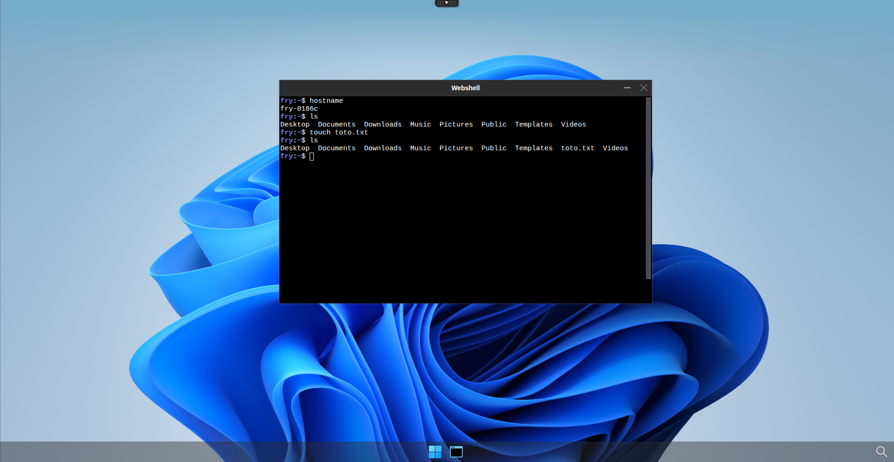
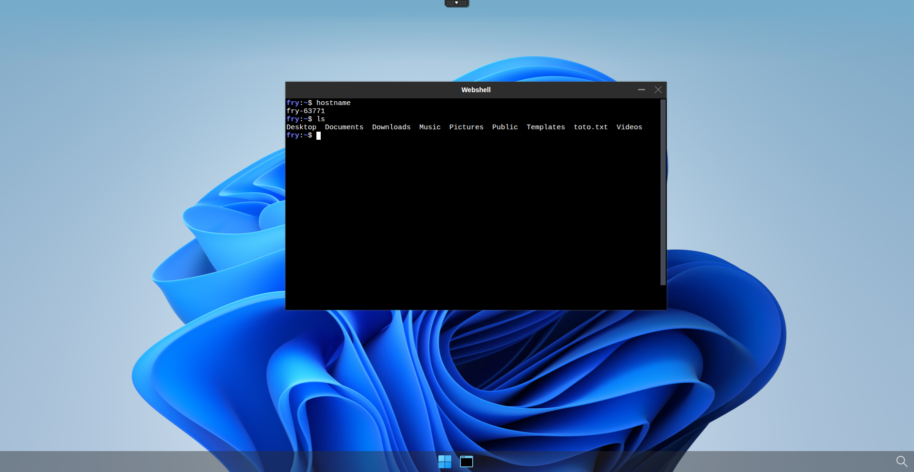

Retain user's home directory using NFS storage
Prerequisites
- a Kuberenetes cluster with abcdesktop installed
- helm command line
To make the user's homerdir persistent using nfs, you will need to : - Set up your own nfs server - Bind user's homedir to nfs server using PersistentVolume (PV) and PersistentVolumeClaim (PVC)
Set up a nfs server
Server install
On a dedicated machine, please install the following packages
apt-get install nfs-kernel-server nfs-common
Server configuration
Once installed, you need to create the folder that you will export
mkdir /data/abcdesktop_nfs
chown -R nobody:nogroup /data/abcdesktop_nfs
Edit /etc/exports
vim /etc/exports
And add the following line
/data/abcdesktop_nfs 192.168.X.X/24(rw,sync,no_subtree_check,no_root_squash) # make sure to change 192.168.X.X/24 by your own cluster subnet
Finaly, apply the config.
exportfs -ra
systemctl restart nfs-kernel-server
Check that the config have been applied properly
exportfs -v
Note
You should see the line you juste wrote in the config file
Bind user's homedir to nfs server
Install nfs-subdir-external-provisioner
Note
If you want more informations about nfs-subdir-external-provisioner please visit this page
First, you have to install a provisonner to your cluster, in this example, we chose nfs-subdir-external-provisioner because of its dynamic subdir creation aspect.
Create a nfs-subdur-values.yaml file and paste the following lines to configure the storage class.
nfs:
server: 192.168.X.X # change it to your server ip
path: /data/abcdesktop_nfs
replicaCount: 1
storageClass:
name: nfs-user-storage-abcdesktop
defaultClass: false
reclaimPolicy: Retain
volumeBindingMode: Immediate
archiveOnDelete: true
onDelete: retain
pathPattern: "${.PVC.annotations.nfs.io/username}" # Important for dynamic subdir creation
rbac:
create: true
serviceAccount:
create: true
name: nfs-subdir-external-provisioner
Then install nfs-subdir-external-provisioner by running the following command
helm install nfs-subdir-external-provisioner \
nfs-subdir-external-provisioner/nfs-subdir-external-provisioner \
--namespace nfs-provisioner \
--create-namespace \
--values nfs-subdur-values.yaml
Info
It is important to set the reclaim policy as Retain to keep our PV alive after PVC deletion
You can check if the storage class has been created by running this command
kubectl get sc
NAME PROVISIONER RECLAIMPOLICY VOLUMEBINDINGMODE ALLOWVOLUMEEXPANSION AGE
nfs-user-storage-abcdesktop cluster.local/nfs-subdir-external-provisioner Retain Immediate true 40h
Update od.config
Now, you will need to specify to pyos to bind users homedir to the exported nfs folder. To do so you will need to update the od.config file.
First, change desktop.homedirectorytype variable from None to persistentVolumeClaim.
desktop.homedirectorytype: 'persistentVolumeClaim'
Then add these lines to define the persistent volume claim template
desktop.persistentvolumeclaim: {
'metadata': {
'name': '{{ provider }}-{{ userid }}',
'annotations': {
'nfs.io/username': '{{ userid }}'
}
},
'spec': {
'storageClassName': 'nfs-user-storage-abcdesktop',
'accessModes': [ 'ReadWriteMany' ],
'resources': {
'requests': {
'storage': '10Gi' } } } }
Note
Here there is no need to specify a persistent volume template to pyos as nfs-subdir-external-provisioner will deal with it automaticaly.
Then, tell pyos to delete the persistent volume claim on user's pod delete but to keep the persistent volume as we defined storage class retain policy as Retain earlier.
desktop.removepersistentvolume: False
desktop.removepersistentvolumeclaim: True
Finaly, update od.config configmap and restart pyos to apply the changes we made
kubectl create -n abcdesktop configmap abcdesktop-config --from-file=od.config -o yaml --dry-run=client | kubectl replace -n abcdesktop -f -
kubectl rollout restart deploy pyos-od -n abcdesktop
Check if user's homedir is persistent
You can now connect to your abcdesktop and login as a user.
Once connected you can run the following command to see if the user's homedir system exists
kubectl describe pod <YOUR-POD-NAME> -n abcdesktop
You should see someting like this in the volumes section
Volumes:
home:
Type: PersistentVolumeClaim (a reference to a PersistentVolumeClaim in the same namespace)
ClaimName: planet-fry
ReadOnly: false
You can also check for PV and PVC inside you cluster
kubectl get pv,pvc -n abcdesktop
NAME CAPACITY ACCESS MODES RECLAIM POLICY STATUS CLAIM STORAGECLASS VOLUMEATTRIBUTESCLASS REASON AGE
persistentvolume/pvc-4b522afd-bf6e-411e-85c3-2a39e1b2c58f 10Gi RWX Retain Bound abcdesktop/planet-fry nfs-user-storage-abcdesktop <unset> 26m
NAME STATUS VOLUME CAPACITY ACCESS MODES STORAGECLASS VOLUMEATTRIBUTESCLASS AGE
persistentvolumeclaim/planet-fry Bound pvc-8f802cbc-873f-46ab-9d7a-fe266da42387 10Gi RWX nfs-user-storage-abcdesktop <unset> 22m
Now you can create a file in the user's homedir

You can also check if the user's homedir is present on your nfs server, you should also see that a subdir have been created thanks to nfs-subdir-external-provisioner.
root@nfs-server_abcdesktop:/data/abcdesktop_nfs# ls
drwxr-x--- 15 2042 12042 4096 Mar 18 09:11 fry
root@nfs-server_abcdesktop:/data/abcdesktop_nfs# ls -l fry/
drwxr-x--- 2 2042 12042 4096 Mar 17 15:09 Desktop
drwxr-x--- 2 2042 12042 4096 Mar 17 15:09 Documents
drwxr-x--- 2 2042 12042 4096 Mar 17 15:09 Downloads
drwxr-x--- 2 2042 12042 4096 Mar 17 15:09 Music
drwxr-x--- 2 2042 12042 4096 Mar 17 15:09 Pictures
drwxr-x--- 2 2042 12042 4096 Mar 17 15:09 Public
drwxr-x--- 2 2042 12042 4096 Mar 17 15:09 Templates
-rw-r----- 1 2042 12042 0 Mar 18 09:11 toto.txt
drwxr-x--- 2 2042 12042 4096 Mar 17 15:09 Videos
Then perform a logoff to destroy your pod and recreates it, once reconnected on a new pod with the same user, check if the file you previously created is still there, it should appear.
